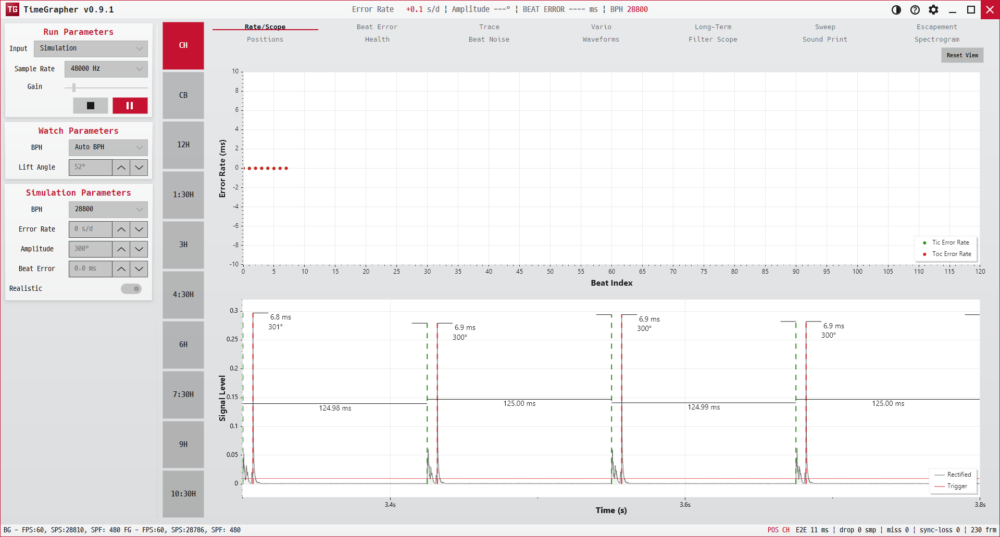

TimeGrapher 사용자 매뉴얼 · TimeGrapher User Manual · Manual do Usuário do TimeGrapher
기계식 시계의 똑딱 소리를 마이크로 듣고, 얼마나 정확한지 실시간으로 분석해 14가지 그래프로 보여 주는 데스크톱 앱입니다.
A desktop app that listens to a mechanical watch's tick through a microphone and analyzes, in real time, how accurate it is — shown as 14 diagnostic graphs.
Um aplicativo de desktop que escuta o tique-taque de um relógio mecânico pelo microfone e analisa, em tempo real, o quão preciso ele é — exibido em 14 gráficos de diagnóstico.
이 매뉴얼 보는 법 — 오른쪽 위 전체 / 한국어 / EN / PT 버튼으로 표시 언어를 바꿀 수 있습니다. 왼쪽 메뉴 설명은 왼쪽 메뉴 · Controls, 각 그래프 설명은 아래 그래프 목록에서 확인하세요.
How to use this manual — Switch the display language with the 전체 / 한국어 / EN / PT buttons at the top right. Left-panel controls are in Controls; each graph is documented from the graph list below.
Como usar este manual — Alterne o idioma exibido com os botões 전체 / 한국어 / EN / PT no canto superior direito. Os controles do painel esquerdo estão em Controls; cada gráfico está documentado na lista de gráficos abaixo.

이 앱이 하는 일 · What it does · O que ele faz
마이크(또는 녹음 파일·합성 신호)로 들어온 소리에서 탈진기(escapement)의 똑(tic)·딱(toc) 충격음을 검출하고, 그 간격으로 시계의 정확도(하루에 몇 초 빠르거나 느린지), 진폭(amplitude), 비트 오차(beat error) 등을 계산합니다. 결과는 여러 관점의 실시간 그래프로 동시에 표시됩니다.
From the incoming sound (mic, recorded file, or synthetic signal) the app detects the escapement's tic and toc impulses, and from their spacing computes the watch's rate (seconds gained/lost per day), amplitude, beat error and more. Results are plotted live from several viewpoints at once.
A partir do som recebido (microfone, arquivo gravado ou sinal sintético), o aplicativo detecta os impulsos tic e toc do escapo e, pelo espaçamento entre eles, calcula a marcha do relógio (segundos ganhos/perdidos por dia), a amplitude, o erro de batida e mais. Os resultados são plotados ao vivo sob vários pontos de vista ao mesmo tempo.
화면 구조 · Screen layout · Layout da tela
창은 크게 세 부분으로 나뉩니다.
The window has three main regions.
A janela tem três regiões principais.
- ① 왼쪽 패널Left panelPainel esquerdo
- 입력·시계·시뮬레이션·기타 파라미터를 설정하고 측정을 시작/일시정지합니다. → 자세히Set input / watch / simulation / misc parameters and start/pause the measurement. → detailsDefina os parâmetros de entrada / relógio / simulação / diversos e inicie ou pause a medição. → detalhes
- ② 포지션 스트립Position stripFaixa de posição
- 시계를 놓은 자세(12시·3시·6시·9시 등)를 고릅니다. Positions 그래프와 연동됩니다.Pick the watch position (dial up, 3 o'clock down, etc.). Tied to the Positions graph.Escolha a posição do relógio (mostrador para cima, 3 horas para baixo, etc.). Vinculada ao gráfico Positions.
- ③ 그래프 탭Graph tabsAbas de gráficos
- 14개 분석 그래프를 탭으로 전환하며 봅니다. 아래 목록 참고.14 analysis graphs, switched by tab. See the list below.14 gráficos de análise, alternados por aba. Veja a lista abaixo.
빠른 시작 · Quick start · Início rápido
- 입력을 고릅니다. 왼쪽 위
Input드롭다운에서 세 가지 중 하나를 선택합니다.Choose an input from theInputdropdown (top left).Escolha uma entrada no menu suspensoInput(canto superior esquerdo).- Live 마이크로 실제 시계 소리를 듣습니다.Listen to a real watch through the microphone.Escute um relógio real pelo microfone.
- Playback 미리 녹음된 WAV 파일을 재생합니다(
sample/폴더에 예제 9개 제공).Play a recorded WAV (9 examples ship insample/).Reproduza um WAV gravado (9 exemplos incluídos emsample/). - Simulation 마이크 없이 합성 신호를 만들어 동작을 시험합니다(데모·연습용).Generate a synthetic signal — no mic needed (demo/practice).Gere um sinal sintético — sem microfone (demonstração/prática).
- 시계 파라미터를 맞춥니다.
BPH(시간당 진동수)와Lift Angle(리프트각)을 측정할 시계에 맞게 설정합니다. → Watch ParametersSet the watch parameters —BPHandLift Angleto match the movement. → Watch ParametersAjuste os parâmetros do relógio —BPHeLift Angleconforme o movimento. → Watch Parameters - ▶ 재생 버튼을 눌러 측정을 시작합니다(같은 버튼이 ⏸ 일시정지로 바뀝니다).Press ▶ Play to start (the same button becomes ⏸ Pause).Pressione ▶ Play para iniciar (o mesmo botão vira ⏸ Pause).
- 그래프를 읽습니다. 목적에 맞는 탭을 골라 봅니다. 장기 추세를 되짚어 볼 때는 Long-Term 탭의 리뷰 바를 일시정지 후 사용합니다.Read the graphs. Pick the tab you need. To review long-run history, pause and use the review bar inside the Long-Term tab.Leia os gráficos. Escolha a aba de que precisa. Para revisar o histórico de longa duração, pause e use a barra de revisão dentro da aba Long-Term.
처음이라면 — Simulation 입력으로 Realistic 옵션을 켜고 ▶를 누르면, 실제 시계 없이도 모든 그래프가 살아 움직이는 모습을 볼 수 있습니다. 매뉴얼을 따라가며 익히기에 좋습니다.
New here? Pick the Simulation input, tick Realistic, and press ▶ — every graph comes alive without a physical watch. Ideal for learning alongside this manual.
Primeira vez aqui? Escolha a entrada Simulation, marque Realistic e pressione ▶ — todos os gráficos ganham vida sem um relógio físico. Ideal para aprender junto com este manual.
신호 품질 경고 · Signal Quality Warnings · Avisos de Qualidade do Sinal
측정 중 입력 신호가 불안정하면 그래프 영역 위에 빨간 경고가 깜빡이고, 하단 상태바가 처리 방법을 안내합니다. 이 경고가 보이면 표시된 rate, amplitude, beat error를 확정값처럼 해석하지 말고 먼저 입력 상태를 정리하세요.
When the input signal is unreliable, a red flashing warning appears over the graph area and the bottom status bar suggests what to do. Treat rate, amplitude, and beat error as provisional until the input is corrected.
Quando o sinal de entrada não é confiável, um aviso vermelho piscante aparece sobre a área do gráfico e a barra de status inferior sugere o que fazer. Trate a marcha, a amplitude e o erro de batida como provisórios até que a entrada seja corrigida.
| 경고 · Warning · Aviso | 뜻 · Meaning · Significado | 처리 방법 · What to do · O que fazer |
|---|---|---|
| Possible false C | 잡음이나 B 피크를 C 이벤트로 잘못 잡았을 가능성이 있습니다.Noise or a B peak may have been selected as the C event.Ruído ou um pico B pode ter sido selecionado como o evento C. | 시계를 움직이지 말고 Beat Noise 파형을 확인한 뒤, 손/주변 잡음을 줄입니다.Keep the watch still, inspect Beat Noise, and reduce handling or ambient noise.Mantenha o relógio imóvel, inspecione o Beat Noise e reduza o manuseio ou o ruído ambiente. |
| C timing unstable | A-to-C 타이밍이 최근 패턴과 맞지 않아 진폭 계산 신뢰도가 낮습니다.A-to-C timing does not match the recent pattern, reducing amplitude confidence.O tempo de A-para-C não corresponde ao padrão recente, reduzindo a confiança na amplitude. | 몇 초 더 측정해 안정되는지 보고, 계속 뜨면 마이크 위치와 시계 접촉을 조정합니다.Measure a little longer; if it persists, adjust microphone placement and watch contact.Meça um pouco mais; se persistir, ajuste o posicionamento do microfone e o contato do relógio. |
| Noisy signal | 주변 소음이나 취급 잡음이 신호 해석에 영향을 줍니다.Ambient or handling noise is affecting interpretation.Ruído ambiente ou de manuseio está afetando a interpretação. | 책상 진동, 손 접촉, 팬/스피커 소음을 줄이고 조용한 위치에서 다시 측정합니다.Reduce desk vibration, hand contact, fan/speaker noise, and retry in a quieter place.Reduza a vibração da mesa, o contato das mãos, o ruído de ventilador/alto-falante e tente novamente em um local mais silencioso. |
| Weak signal | 시계 소리가 너무 약하거나 C 구간이 일부 빠져 있습니다.The watch sound is too weak or part of the C event is missing.O som do relógio está fraco demais ou parte do evento C está faltando. | 시계와 마이크를 다시 놓고, 필요하면 입력 gain을 조금 올립니다.Reposition the watch/microphone and raise input gain slightly if needed.Reposicione o relógio e o microfone e aumente um pouco o ganho de entrada, se necessário. |
| Clipping | 입력이 너무 커서 파형이 잘렸습니다. 이 상태의 측정값은 신뢰하기 어렵습니다.The input is too loud and the waveform is clipped, making readings unreliable.A entrada está alta demais e a forma de onda está saturada, tornando as leituras não confiáveis. | gain을 낮춘 뒤 flat-top 파형이 사라지는지 확인하고 다시 측정합니다.Lower gain, confirm the flat-top waveform disappears, then measure again.Reduza o ganho, confirme que a forma de onda de topo achatado desaparece e meça novamente. |
| No signal | 분석 가능한 시계 신호가 감지되지 않습니다.No usable watch signal is detected.Nenhum sinal de relógio utilizável é detectado. | 입력 장치, 파일, 마이크 연결, 시계 위치를 확인합니다.Check the input device, file, microphone connection, and watch position.Verifique o dispositivo de entrada, o arquivo, a conexão do microfone e a posição do relógio. |
그래프 목록 · The 14 graphs · Os 14 gráficos
각 카드를 눌러 그래프별 용도 · 보는 방법 · 옵션 설명으로 이동합니다.
Click a card for each graph's purpose · how to read · options.
Clique em um cartão para ver finalidade · como ler · opções de cada gráfico.
용어 사전 · Glossary · Glossário
| 용어 · Term · Termo | 설명 · Meaning · Significado |
|---|---|
| BPH | 시간당 진동수(BPH). 탈진기 박자. 예: 21600, 28800.BPH — the escapement's tick rate (e.g. 21600, 28800).BPH — a cadência de batidas do escapo (ex.: 21600, 28800). |
| Error Rate (s/d) | 하루에 빠르거나(+) 느린(−) 초. 0에 가까울수록 정확.Seconds per day gained (+) or lost (−). Closer to 0 is more accurate.Segundos por dia ganhos (+) ou perdidos (−). Mais perto de 0 é mais preciso. |
| Amplitude(°) | 밸런스 휠의 진폭(흔들림 각도). 보통 270–300°가 건강한 범위.Balance-wheel swing in degrees; 270–300° is a typical healthy range.Oscilação da roda de balanço em graus; 270–300° é uma faixa saudável típica. |
| Beat error (ms) | 똑과 딱 간격의 비대칭(ms). 0에 가까울수록 좋음.Tic/toc spacing asymmetry in milliseconds; closer to 0 is better.Assimetria do espaçamento tic/toc em milissegundos; mais perto de 0 é melhor. |
| Tic / Toc | 교대로 나는 두 충격음(똑·딱).The two alternating escapement impulses.Os dois impulsos alternados do escapo. tic toc |
| A / C event | 한 비트 안의 충격 구간. A = 기준 시작점, C = 임팩트(피크/온셋) 구간.Sub-events within a beat. A = the reference onset; C = the impact cluster (peak/onset).Subeventos dentro de uma batida. A = o início de referência; C = o agrupamento de impacto (pico/onset). |
| Lift Angle | 진폭 계산에 쓰는 무브먼트 고유값(리프트각). 시계 사양에 맞춰 설정.A movement-specific angle used to compute amplitude; set it to the watch's spec.Um ângulo específico do movimento usado para calcular a amplitude; defina-o conforme a especificação do relógio. |